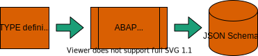

ABAP File Formats
|
Albert Mink, @SAP Lars Hvam, @heliconialabs |
Disclaimer
- Everything might change
- Check respective licenses
History of sharing ABAP code
Let's talk about the ABAP file formats
Why ABAP file formats (AFF)?


Public definition of file content that is human-readable, complete and without redundancy
How?

AFF specifies a JSON Schema per object type
JSON Schema is generated from an ABAP type
ABAP type is the common basis for serializers
Examples
- Form-based object: BAdI Enhancement Spot
- Source-based object: ABAP Interface
BAdI Enhancement Spot
ADT form-based editor

AFF file
{
"formatVersion": "1",
"header": {
"description": "",
"originalLanguage": "en"
},
"configuration": {
"tool": "badiDefinition"
},
"badiDefinitions": [
{
"name": "BADI_WB_OBJECT_VERS_PROVIDER",
"description": "BAdI definition for workbench",
"interface": "IF_WB_OBJECT_VERSION_PROVIDER",
"instantiation": "creatingNewInstances",
"multipleUse": false,
"fallbackClass": "CL_BLUE_TLOGO_VERSION_PROVIDER",
"filters": [
{
"name": "OBJECT_TYPE",
"description": "Workbench object type",
"type": "characterLike"
}
]
}
]
}
On filenames and formatting
Filename is composed by
- obj_name.TYPE.json
Ensure interchangeability by formatting
- UTF-8
- End-of-line marker LF ('\n')
- Empty line at end-of-file
ABAP Interface
| File | Description |
|---|---|
| object_name.intf.abap | ABAP source code |
| object_name.intf.json | Metadata file |
Metadata file in AFF
JSON data can be intuitive
{
"formatVersion": "1",
"header": {
"description": "AFF: Interface v1",
"originalLanguage": "en"
}
}
Possible validation and annotation with JSON Schema, e.g. VS Code Extension
Metadata file in abapGit
The recent file formatAFF vision of ONE format
ADT History/Compare

abapGit

gCTS
Available object types
AFF is specified for: AOBJ, APIC, APLO, CFDF, CHDO, CHKC, CHKO, CHKV, CLAS, DDLS, DDLX, DMON, DOMA, DSFI, EEEC, ENHO, ENHS, EVTB, FUGR, GSMP, INTF, NROB, RONT, SAJC, SAJT, SCP1, SITO, SMBC, SPRV, SRVB
abapGit supports(via ajson): CHKC, CHKO, CHKV, EVTC, NONT, RONT, SMBC, INTF (experimental)
SAP Basis 7.56 and newer provides serializer
Focus is on JSON for new Object Types
BREAK-POINT.
abapGit activation
- Can be tested via "experimental" switch
- Will be enabled when no information is lost(translations and long text)
- Pull old format, stage new format
- Still 702 and up(if object works on the system)
abapGit migration
handling old xml files => automatic conversionautomated standalone migration path
100s of xmls, takes time
Schema Generation
from ABAP in ABAP
Automated Schema Generation
for everyone in the world, LINK?
Thanks to all contributors
list, todoLinks
#ABAPisNotDead
https://larshp.github.io/abapconf2022/